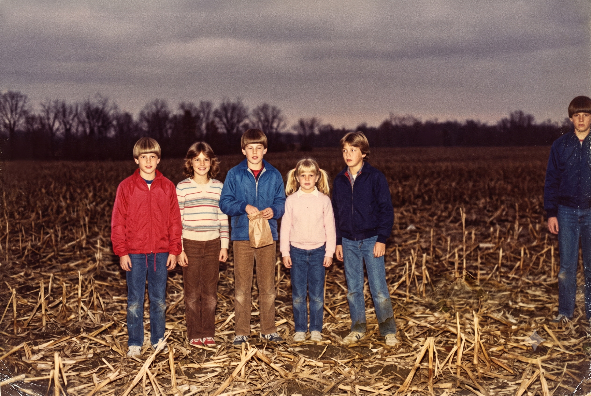

Welcome
The Calder County Historical Society is a volunteer organization dedicated to collecting, preserving, and sharing the history of our county and its townships. Our collection includes over 4,000 photographs, township plat maps, church and cemetery records, and a complete run of the county newspaper on microfilm.
The Society meets on the third Thursday of each month at 7:00 PM in the lower level of the Calder Public Library. Visitors are always welcome. We do not meet in April.
Please note: the reading room is staffed by volunteers and hours may vary. Call ahead before making the drive.
Local Traditions
Among the customs recorded by our founding members, the one most often asked about is the spring observance referred to in older documents as "Rabbit Night." The practice appears in Calder County church records as early as 1871 and is generally described as a children's game in which small parcels of food were hidden and then searched for after dark.
The custom is sometimes attributed to settlers from the west of Ireland, and the late Harold Vess (Society president, 1968–1981) collected several variants of a rhyme associated with it. Mr. Vess's notes describe the observance as harmless and largely forgotten, though he records that participation was expected of every household in the township and that families who did not take part were "spoken about."
The Society does not maintain records of the observance after 1986. Inquiries on this subject should be directed to the county recorder's office and not to our volunteers.
From the Photo Collection

Newsletter Archive
The Society has published The Calder Record quarterly since 1961. Back issues have been scanned by volunteers and are available below. Issues not listed were not recovered.
| Volume | Years | Issues | Status |
|---|---|---|---|
| 18 | 1978–1980 | 69–80 | Scanned — PDF |
| 19 | 1981–1983 | 81–92 | Scanned — PDF |
| 20 | 1984–1986 | 93–104 | Scanned — PDF |
| 21 | 1987 | 105–108 | Withdrawn at the request of the Society |
| 22 | 1988–1990 | 109–120 | Scanned — PDF |
| 23 | 1991–1993 | 121–132 | Scanned — PDF |
| 24 | 1994–1996 | 133–144 | Scanned — PDF |
Volunteers are still needed to complete the scanning project. No experience is necessary. Please do not remove materials from the reading room.
Current Projects
- Indexing of the Calder Township cemetery transcriptions (ongoing)
- Digitization of the Boyd family farm ledgers, 1902–1938
- Transcription of Harold Vess's field notebooks (suspended)
- Repair of the reading room roof (funded — thank you to our members)